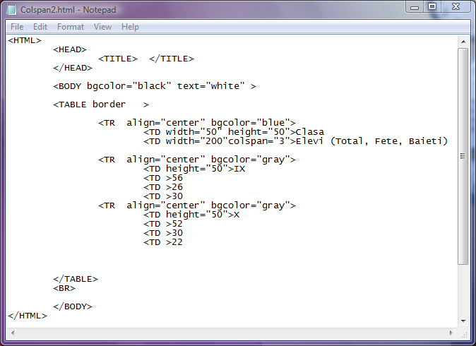

Atributele etichetei TD
1)Atributul align
Atributul align prin valorile sale "left", "right" sau "center", permite alinierea
datelor dintr-o celula la stanga, la dreaptasau la centru .
Iata mai jos codul sursa al unei pagini web cu un tabel in care, in diferitele celule sunt moduri
diferite de aliniere a datelor...click pe cod pentru a deschide pagina web...
2)Atributul valign
Atributul valign seteaza modul de aliniere pe verticala a datelot in celule. Valorile acestui atribut sunt "top"
(aliniere la marginea superioara a celulei), "bottom" (aliniere la marginea inferioara a celulei) si
"middle" (aliniere la mijlocul celulei, pe verticala).
Codul de mai jos arata cum poate fi scris cod pentru alinierea pe verticala in celulele tabelului. Click
pe cod pentru deschiderea paginii web...
3)Atributul width
Atri
butul width are ca valori numere pozitive ce reprezinta latimea celulei. Cu ajutorul acestui atribut pot fi
setate deci latimile celulelor la valorile dorite. Mai jos sunt prezentate doua exemple de utilizare
a atributului width... click pe coduri pentru a deschide paginile web corespunzatoare...
4)Atributul height
Atri
butul height are ca valori numere pozitive ce reprezinta inaltimea celulei. Cu ajutorul acestui atribut pot fi
setate deci inaltimile celulelor la valorile dorite. Mai jos sunt prezentate doua exemple de utilizare
a atributului height. De remarcat este faptul ca daca doua celule ale aceluiasi rand au setari diferite ale inaltimii,
atunci browserul va afisa toate celulele acelui rand la inaltimea cea mai mare care a fost setata...
click pe coduri pentru a deschide paginile web corespunzatoare...

5)Atributul bgcolor
Atributul bgcolor stabileste culoarea de fundal a celulei respective. Astfel fiecare dintre celulele tabelului
ar putea avea o alta culoare de fundal (daca se doreste asta). Valorile acestui atribut sunt sau nume valide de
culori in limba engleza, sau codul hexazecimal al culorii in sintaxa "#RRGGBB". In continuare sunt prezentate doua
exemple de manipulare a culorii de fundal pentru celule. Remarcati ca, desi culoarea de fundal a tabelului are o
setare diferita decat culoarea de fundal a celulei, aceasta din urma este prioritara!... click pe coduri pentru
a deschide paginile web corespunzatoare...
In imaginea de deasupra nu este vizibil intregul cod ci doar o parte, din cauza dimensiunilor mai mari. Pentru a vedea
intregul cod deschideti pagina web, pe bara de instrumente a browserului dati click pe Page si selectati optiune View
Source....
6)Atributul background
Atributul background are ca valoare adresa unui fisier imagine care va fi imaginea de fundal a celulei. Iata
un exemplu de setare a unor imagini de fundal pentru celulele tabelului... click pe cod pentru a deschide pagina
web...
7)Atributul bordercolor
Atributul bordercolor stabileste culoarea de chenar individuala a unei celule. In exemplul care urmeaza este
realizat un tabel cu toate celulele avand chenare de culori diferite... click pe cod pentru a deschide pagina web...
8)Atributul colspan
Atributul colspan grupeaza celule ale mai multor coloane constituindu-se in subcoloane. Colspan are ca valoare un
numar pozitiv reprezentand numarul de celule grupate ca subcoloane. Este extrem de utila in situatiile in care valorile
dintr-o coloana trebuie defalcate pe categorii. In cele ce urmeaza vor fi prezentate cateva exemple de utilizare a atributului
colspan... click pe coduri pentru a deschide paginile web corespunzatoare...
Un exemplu:

9)Atributul rowspan
Atributul rowspan grupeaza celule ale mai multor randuri in asa fel incat acestea se vor constitui in subranduri.
Valoarea atributului rowspan este un numar pozitiv care seteaza de pe cate randuri vor fi grupate celulele. Iata si un
exemplu de utilizare a atributului rowspan in realizarea unui rabel cu subranduri. (click pe cod pentru deschiderea
paginii web)
Inapoi la Tabele...